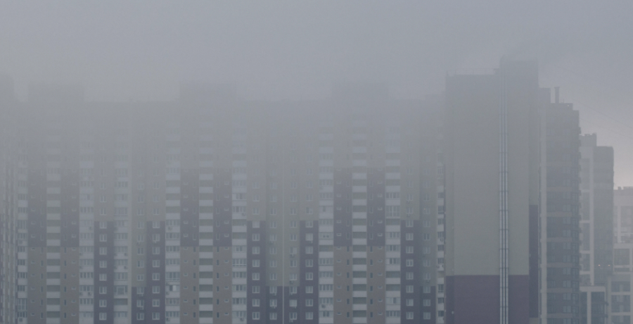
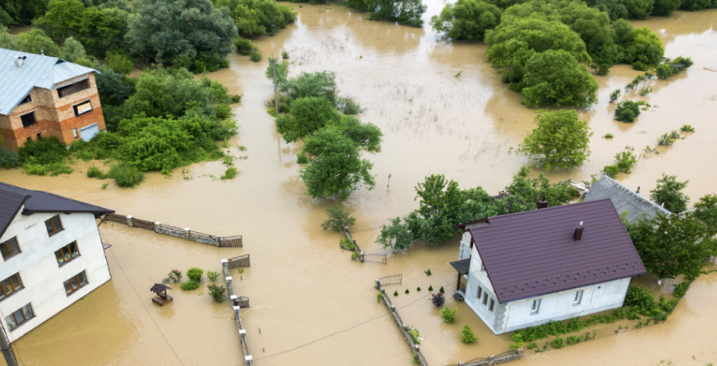

Большие города страдают от недостатка растений. Свободного места нет: практически все застроено, начиная от центра и заканчивая окраиной. Поэтому сделать дополнительные парки чаще всего невозможно. Альтернативой становится озеленение кровли. Рассказываем, как оно улучшает жизнь людей и какие проблемы позволяет решить.
Проблема. Существует эффект «теплового острова»: температура в городе всегда заметно выше по сравнению с сельской местностью. Во многом это связано с недостатком растительности. Зелень теряет и испаряет много влаги, что ощутимо влияет на воздух. Из-за жары в мегаполисах растет содержание вредных веществ, ускоряется производство озона и возникает смог – становится тяжело дышать, а со временем могут возникнуть болезни.
Решение. Растительность на крышах улучшает качество воздуха – в процессе фотосинтеза она создает для города дополнительный кислород. К тому же она регулирует влажность, адсорбирует пыль и атмосферные загрязнения. Положительное влияние зеленых зон хорошо видно на примере парков. Здесь весной и летом воздух содержит на 42%, а зимой – на 37% меньше пыли, чем в других зонах города.
Проблема. На обычных крышах летом очень жарко – температура может подниматься выше 50 °C. Это влияет и на погоду в доме. Жителям верхних этажей не позавидуешь: летом у них жарче, а зимой – холоднее всего. Растут счета за коммунальные услуги, ведь приходится тратить больше энергии на отопление и кондиционирование воздуха. А из-за энергозатрат увеличивается количество углекислого газа, что ведет к изменению климата.
Решение. Растения позволяют снизить температуру на крыше в жаркий сезон до 35 °C, то есть в среднем на 15 °C. Поэтому жить на верхних этажах становится гораздо комфортнее. Зимой здесь тоже будет теплее, ведь растения не дают потолкам промерзать. Электроэнергии станет уходить меньше, что понизит траты на ЖКХ и поможет климату.
Проблема. В городах распространена плотная застройка: часто дома темные и имеют слабую способность к отражению. Поэтому они, в отличие от растений, поглощают тепло, а не отзеркаливают его. Из-за этого температура воздуха летом здесь может быть в среднем на 8–9 °С выше, чем в пригороде.
Решение. Растения на крышах способны охлаждать не только дом, но и окружающую среду. Благодаря им температура в городе может опуститься примерно на 3 °C. Это поможет избежать аномальной жары, а значит – снизить количество тепловых ударов и других недугов, с которыми сталкиваются люди.
Проблема. Многие крупные города периодически страдают от аномальных осадков, которые приводят к затоплениям. Система городской канализации далеко не всегда справляется. Нарушается инфраструктура: становится тяжело перемещаться как пешком, так и на транспорте.
Решение. Зеленые насаждения могут удерживать существенную часть осадков, уменьшая нагрузку на городскую канализацию. Часть воды будет поглощаться растениями, а не стекать с крыши. Летом такая кровля способна сохранить 70–80% осадков, а зимой – примерно 10–35% в зависимости от количества и видов растений.
Проблема. Города подходят исключительно для жизни домашних животных вроде кошек и собак. Более дикие звери остаются в отдаленных местностях вроде глухих лесов, из-за чего страдает биоразнообразие. Зеленые кровли могли бы стать местом обитания для части птиц и животных.
Решение. Зеленые крыши реально адаптировать под конкретных животных, воссоздав комфортную для них среду обитания. Необязательно собирать в мегаполисах все виды птиц и зверей: можно привлечь в город только полезных и редких. В итоге это положительно скажется не только на экологии, но и на людях, поскольку насыщенность фауны непосредственно связана с нашим здоровьем.